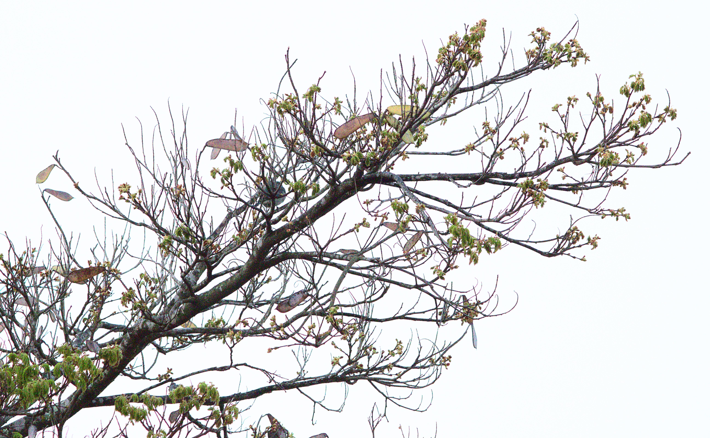

Autorretratos
Conjunto diverso de autorretratos de temática religiosa, espiritual, crítica e documental. Ao nos autorretratarmos, duplicamo-nos em fotógrafa em modelo, tornando-nos em duas para o nascimento de uma nova personagem.
Conjunto diverso de autorretratos de temática religiosa, espiritual, crítica e documental. Ao nos autorretratarmos, duplicamo-nos em fotógrafa em modelo, tornando-nos em duas para o nascimento de uma nova personagem.

Registro dos usos contemporâneos dos antigos galpões fabris da Rua Guaicurus, distrito da Lapa, São Paulo capital.

Registro de cerimonial religioso do candomblé. Saída de Muzema trazendo o nascimento para o orixá Logunedé.

Registro da transição de feições de um espécime urbano de sibipiruna ao longo das estações do ano. Nativa da Mata Atlântica, tem forte parentesco com o icônico pau-brasil. A partir de agosto, suas fartas flores amarelas ajudam o compor o mosaico de cores nas metrópoles dos Mares de Morros Florestados brasileiros.

Registro dos principais rios urbanos da metrópole de São Paulo. Parte do trabalho documental é a a superação das barreiras impostas entre a água e a cidade para fotografar essa hidrografia cativa.
Registro da transição de feições de um espécime urbano de sibipiruna ao longo das estações do ano. Nativa da Mata Atlântica, tem forte parentesco com o icônico pau-brasil. A partir de agosto, suas fartas flores amarelas ajudam o compor o mosaico de cores nas metrópoles dos Mares de Morros Florestados brasileiros.